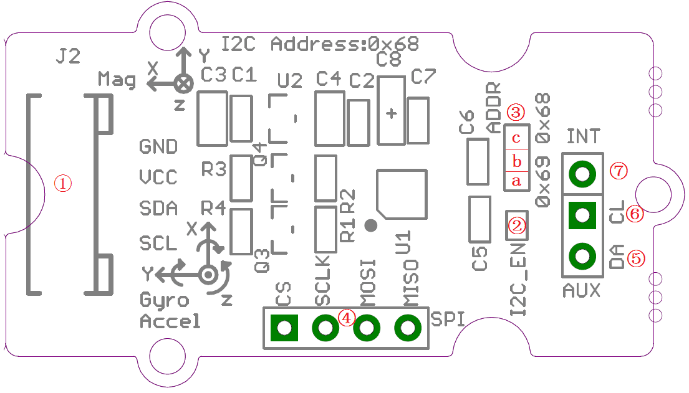
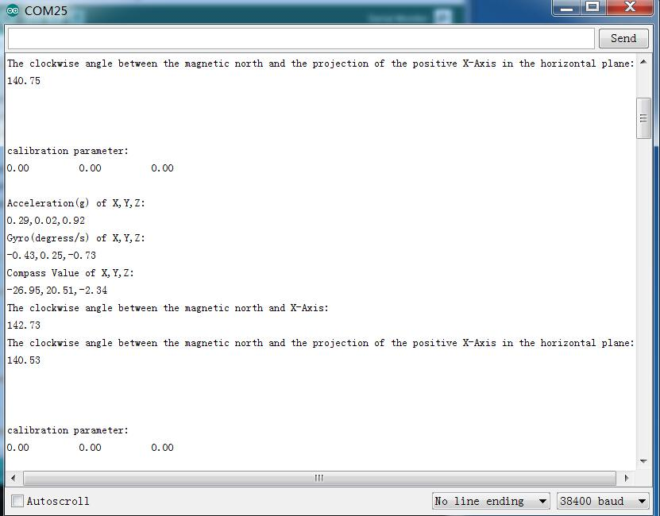
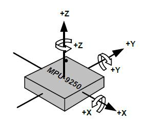
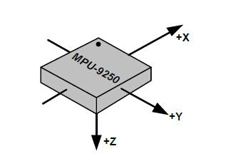

Grove - IMU 9DOF v2.0
Grove - IMU 9DOF v2.0 is an upgrade version of Grove - IMU 9DOF v1.0 and it is a high performance 9-axis motion tracking module, which is base on MPU-9250. The MPU-9250 is a integrated 9-axis motion tracking device designed for the low power, low cost, and high performance requirements of consumer electronics equipment including smartphones, tablets and wearable sensors. MPU-9150 features three 16-bit ADC for digitizing the gyroscope outputs and three 16-bit ADCs for digitizing the accelerometer outputs and three 16-bit ADCs for digitizing the magnetometer outputs.
Specification
- I2C/SPI interface
- Auxiliary I2C
- Low Power Consumption
- 400kHz Fast Mode I2C for communicating with all registers
- Digital-output 3-Axis angular rate sensors (gyroscopes) with a user-programmable full-scale range of ±250, ±500, ±1000, and ±2000°/sec
- Digital-output 3-Axis accelerometer with a programmable full scale range of ±2g, ±4g, ±8g and ±16g
- Digital-output 3-Axis accelerometer with a full scale measurement range is ±4800μT
Interface Function

- ①Grove interface,connect to I2C
- ②I2C or SPI select pad(default is I2C), if want to use SPI, disconnect this pad
- ③Address select pad, default connected b and c address is 0x68, if connect b and a address is 0x69, if want to use SPI, disconnect this pad to either side.
- ④SPI Interface
- ⑤Auxiliary I2C master serial data
- ⑥Auxiliary I2C master serial clock
- ⑦Interrupt digital output
Usage
Based on library,we can display value of Accel&Gyro&Magnet on serial monitor. Now let's show how to use the module.
Hardware Installation
Hardware installation is very easy, because there's an I2C Grove in Seeeduino, so what we need to do is connect it to I2C Grove via a Grove cable.
Software Part
- 1) Download the library;
- 2) Unzip libraries into the libraries file of Arduino IDE by the path: ..\arduino-1.0.5\libraries.
- 3) Unzip IMU_9D0F_Demo file into the libraries file of Arduino IDE by the path: ..\arduino-1.0.5\libraries.
- 4) Open the code directly by the path: File -> Example -> Grove_IMU_9DOF_9250
- 5) Upload the code. Note that you should select the correct board type and COM port.
- 6)You can see :

In static state，the z-Axis output value is about 0.98g，so you can refer to this to test if your sensor can work normally.
Orientation of Axes
The diagram below shows the orientation of the axes of sensitivity and the polarity of rotation.Note the pin 1 identifier (•) in the figure.

Orientation of Axes of Sensitivity and Polarity of Rotation for Accelerometer and Gyroscope

Orientation of Axes of Sensitivity for Compass
Resource
Copyright (c) 2008-2016 Seeed Development Limited (
www.seeedstudio.com /
www.seeed.cc)
This static html page was created from http://www.seeedstudio.com/wiki